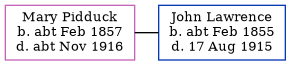

Mary Ann Lawrence (née Pidduck) cFeb 1857 - c1916
[ Home ] | [ Calendar ] | [ Surnames Index ] | [ Errors ] | [ Family History ]Mary Pidduck, the wife of John Lawrence (the great-great-uncle of Nigel Horne), was born in St Lawrence, Thanet, Kent, England c. Feb 18571,2,3,4. She married John (a licensed victualler) in St Lawrence on 14 Feb 18805.
During her life, she was living at Southwood Road, St Lawrence, Thanet, Kent, England on 5 Apr 18916; and at The Elephant and Castle Inn, 5 Hereson Road, Ramsgate, Kent on 31 Mar 19011.
She died c. Nov 1916 in Thanet3.
Citations
- 1901 England, Wales & Scotland Census - Findmypast (was age 44 and the wife of the head of the household)
- England & Wales births 1837-2006 - Findmypast
- England & Wales deaths 1837-2007 - Findmypast
- Kent, Canterbury Archdeaconry Marriages - Findmypast
- England & Wales Marriages 1837-2005 - Findmypast
- 1891 England, Wales & Scotland Census - Findmypast (was age 34 and the wife of the head of the household)
Media
Canterbury Marriages - GBPRS/CANT/M/97021984/2
England Marriages 1538-1973 - R_848394353/2
England & Wales marriages 1837-2008 - BMD/M/1880/1/AZ/000188/213
England & Wales births 1837-2006 - BMD/B/1857/1/NZ/000284/023
1891 England, Wales & Scotland Census - GBC/1891/0005908097
England & Wales deaths 1837-2007 - BMD/D/1916/4/AZ/000620/081
Family Tree
Map
Generated by ged2site. Last updated on Jul 3, 2024
Known Issues
Apr 5, 1891: not living at same address as spouse John Lawrence ('Southwood Road, St Lawrence, Thanet, Kent, England'/'The Australian Arms, 45 Ashburnham Road, St Lawrence, Thanet, Kent, England')
No records of living with anyone